Folke Ishii - Dokumentation projekt Vt
1. Idébeskrivning
Jag ska göra en hemsida för mig själv, som jag ska lägga upp på min domän ishii.seMålgruppen är de personer som vill veta mer om mig och mina projekt som jag gjort.
2. Planering
2.1 Handskiss
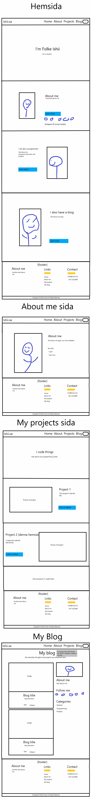 Jag kommer använda mig till mestadels utav flexbox då det är väldigt bra att använda media queries med, men några element komer vara grids. Jag använde dock en grid för att göra footern för jag hade tänkt från början att den skulle vara lite mer komplex, men när jag skissade det så insåg jag att det var fult, så jag ändrade lite på footern. Det var från början en 2x3 grid men det blev istället 1x3 grid som jag lika gärna kunde ha gjort med flex box. Nästan allt är uppbyggd av antingen ingenting eller flexbox eftersom jag inte hade en så stor anledning att använda grids och att det är lättare att använda flex box.2.2 Schema
| Vecka | På lektionen | Utanför lektionen |
|---|---|---|
| 4 | Fixa burgermenu buggar | Fixa till darkmode |
| 5 | Fixa buggar | Ändra javascript så darkmode fungerar korrekt |
| 6 | Fixa Menyn | Fixa färger |
| 7 | - | Starta på innehållet och de andra hemsidorna |
| 8 | Innehållet på index.html, strukturera de andra hemsidorna | Börja på innehållet på index.html |
| 9 | Börja på main part på home | Börja på main part på home |
| 10 | Skapa struktur för andra sidor | Skapa struktur för andra sidor |
| 11 | Lägg in information | Lägg in information |
| 12 | Fixa lite här och där | Fixa lite här och där |
3. Dokumentation
Lektion vecka 4
Första lektionen så lade jag ihop kod som jag hade hemma. Det var inte mycket så jag lade till lite grejer för att den ska bättre anpassa sig till hemsidan och projektet i skolan. Att merge:a koden var inga problem och att lägga till lite färger, jag råkade dock göra det i fel dokument och gjorde allting i hamburgar-meny mappen istället för WU_projektVT_2C mappen. Annars gick det som jag gjorde bra, då jag fick inte några stora problem. Tills nästa gång, ska jag nog veta mer om hur jag ska strukturera css, html och javascript. Sen ska jag förbättra planeringen om vad jag ska göra.Lektion vecka 5
Den här lektionen kunde jag tyvärr inte jobba så mycket på hemsidan då jag hjälpte mest andra för att få sina hemsidor att fungera. Det var inte dock bortkastad tid då jag lärde mig också då jag behövde googla på mycket för att få deras hemsida att fungera, och det kunde jag också använda på min hemsida. Jag hjälpte dock inte andra hela tiden utan 'lekte' runt i JSFiddle om hur media queries fungerar och hur man kan ändra layouts beroende på hur stor fönstret är. Jag lärde mig det jag behövde om media queries, tills nästa gång borde jag nog jobba mer på min hemsida än att hjälpa andra.Lektion vecka 6
Implementerade det jag lärde mig om media queries i JSFiddle vekca 5. Layouten ändras nu beroende på om man är på dator, mobil eller har en förminskat fönster på dator med mera. Det fungerade bra, och jag behövde göra lite ändringar gällande menyn om jag skulle få media queries att fungera. Jag har behövt ändrat ganska mycket för att det nya jag vill göra fungerar inte annars. Jag har försökt tänka på ett sätt som gör det väldigt lätt att ändra på något om jag skulle vilja göra stor ändringar i framtiden, men eftersom jag inte vet vilka ändringar detta är så är det enda sättet att veta om det fungerar är att vänta tills jag ska göra dessa ändringar. Annars gick det jag ville göra väldigt bra och tills nästa gång ska jag nog tänka på att strukturera html, css och javascripten bättre.Under lovet
Under lovet har jag hunnit jobba lite, och då gjorde jag en code cleanup för att ha en bättre struktur, och lade in kommentarer så jag vet vilken css/html/js bit som gör vad. Det gick gick väldigt bra att kunna kommentera, nu behöver jag bara läsa kommentaren för att vet vad som gör vad vilket gör det väldigt lätt för mig att ändra på någonting. Det förbättrade även strukturen att göra en cleanup då jag märkte att jag hade mycket onödigt med. Jag märkte även att jag hade vissa bitar upprepade. På själva hemsidan gjorde jag dock inte mycket utan ändrade lite på färger och fixade så darkmode fungerade korrekt. Nu skulle jag kalla menyn klar, vilket är skönt för det är den som är mest komplicerad. Tills nästa gång ska jag tänka på att inte upprepa och att jag ska göra en till cleanup strax innan jag är klar med allt.Lektion vecka 8
Under lektionen vecka 8 har jag fixat lite problem som uppstod med titeln. Jag fixade så att titeln och strecket under får korrekt storlek och jag lade till lite text under rubriken. Jag lyckades få det jag ville att fungera, men med lite olika sätt lösa problemet. Det tog mig många olika försök att göra det jag ville, vilket tog en stor del av lektionen. Jag försökte först med 'position: absolute' men då ville de inte vara tillsammans. Sen försökte jag med 'position: relative' vilket inte fungerade överhuvud taget. Jag förskte gör allt i en div, göra varsin div och att lägga divs i divs. Ingenting fungerade. Sen försökte jag med grid men det ville inte sätta sig på rätt sätt och jag fick problem med linjen under. Sen efter många försök fick jag det att fungera med en flexbox. Jag ändrade lite på strukturen i slutet så som jag sa åt mig själv de förra veckorna och jag kommenterade allt. Om man bortser från att jag hann inte göra så mycket under en längre tid, gick allt precis som jag ville vilket är bra. Tills nästa gång ska jag nog forksa lite mer om vad position: absolute, position: relative, grid, flexbox m.m egentligen gör och när man ska använda vilken så jag slipper försöka använda alla och slösa en massa tid. Det som gick mindre bra är att jag hann inte med så mycket. Jag hade tänkt att börja med innehållet på index.html och de andra hemsidorna men hann inte. Jag är ganska långt bak i schemat.Lektion vecka 9
Idag ändrade jag lite på utseendet på hemsidan, samtidigt som jag lade till den övergripande informationen som finns i home-sidan. Där började jag med 'about me' delen som gör en kort introduktion och sedan länkar till about me sidan, som förklarar mer om mig själv. Jag skapade struktur som gjorde så att jag lätt kunde använda samma struktur på "projects" och på "blog". Jag hade dock lite problem med att få strukturen att fungera på det sättet jag ville då jag hade problem med att hantera bilder på ett bra sätt. Sen hann jag inte arbeta hela lektionen då jag hjälpte mina bordskamrater. Annars blev jag nöjd med den utseendeförbättringen jag gjorde samt att jag blev nöjd att jag lyckades fixa två buggar som jag hade missat sedan förra lektionen. Tills nästa gång ska jag nog kolla igenom lite youtube videor eller liknande för att veta bättre hur man ska skapa struktur och hur man ska hantera bilder på ett bra sätt. Jag följde rådet jag gav mig själv förra veckan vilket jag är nöjd med.Lektion vecka 10
Den här lektionen jobbade jag på hårt, men kom inte så långt. Jag hade väldiga problem med att få det att fungera såsom jag ville. Jag försökte med att skapa strukturen för undersidorna. Detta är något som hag behöver jobba med hemma, där jag kan lättare kolla på tutorials på diverse hemsidor och youtube. Men om jag får strukturen att fungera på det sättet jag vill, så kommer det ta max 10 min att lägga in innehåll. Detta är en lektion jag inte är nöjd med, och jag kommer behöver jobba mycket hemma vilket inte är något problem för mig då jag tycker det är kull att jobba med css och html. Det gick nästan inget bra med denna lektionen. Tills nästa gång ska jag ha strukturen implementerad, det är ett krav jag sätter på mig själv.Mellan Lektionerna vecka 10 och vecka 11
Jag gjorde så mycket mellan dessa två lektioner så jag blev tvungen att lägga till detta stycke. När onsdagen vecka 10 var slut gick jag hem för att åter igen försöka fixa det jag ville. Efter lite research fick jag reda på varför jag har haft så stora problem med det. Det jag försökte göra var tydligen väldigt svårt. För att tydliggöra vad jag ville göra, så ville jag ha en struktur så jag kan lägga till en bild, bredvid bilden finns det text. Det låter kanske inte så svårt men för att allt ska bli centrerat och placerat på det sättet som jag ville var väldigt svårt. Jag försökte kolla på andra hemsidor och tutorials på Youtube och det visade sig att alla använder sig av 'Bootstrap', vilket är ett css framework (10597 rader css!) för att mycket lättare göra det jag vill. Jag tyckte det var lite 'fusk' att använda ett sådant här stort framework men med tanke på att professionella hemsidor använder sig av frameworks känner jag mig mindre skyldig. Det betyder inte att jag inte lärt mig något genom att använda annan kod, då jag kollade igenom koden och lärde mig nya begrepp såsom '!important' eftersom jag behövde ändra stylingen för att göra exakt som jag ville ha det. Jag strävar fortfarande efter att göra allting själv och dem här tre delarna som använder sig av bootstrap kommer någ vara det enda som finns. När det kommer till resultatet, blev jag mycket nöjd och fick det att bli precis som jag ville ha det. Det enda jag behöver göra är att mobilanpassa lite. Tills nästa gång ska jag tänka på att göra lite research först om jag fastnar istället för att försköa fixa det och riskera att slösa en massa tid precis som jag har gjort nu.Uppdatering 1: Jag fixade mobilanpassningen (själv) genom att lägga till lite css på bilderna. Jag kommer att behöva lägga ner mycket tid för att fixa strukturen för "projekt" och strukturen för blog om jag vill att det ska bli såsom jag vill. Sedan ändrade jag lite på utseendet så att hemsidan såg lite snyggare ut.
Uppdatering 2: Jag lade till en footer, det gick bra och jag lyckades få till stylingen, färger och så den passar till alla hemsidor av alla storlekar. Jag blve nöjd med hur footern såg ut. Sedan ändrade jag också taggarna så dem passar in där dom ska och inte använda div taggar hela tiden.
Lektion vecka 11
Den här lektionen så fixade jag lite diverse saker och gjorde minimal code cleanup. Jag har ingen kod men jag började också planera blog delen lite mer, inte bara utseeendet utan jag planerade även koden. Själva kodmässigt så fick jag inte så mycket gjort men är ändå nöjd för det hjälper mig med att skriva mer tills nästa gång.Lektion vecka 12
Under denna lektion har jag gjort väldigt mycket, och är väldigt nöjd med vad jag har gjort. Om jag börjar med blog delen gick det väldigt bra med att skriva den. Sedan lektionen innan så hade jag planerat utseendet och koden, vilket gjorde så att det gick väldigt snabbt med att utveckla den delen. Jag fick nästan inga problem under utvecklingen och jag är väldigt nöjd med resultatet. Sedan gjorde jag också projekt sidan vilket jag följde vilket planeringen, eller skissen och det tog inte så lång tid eftersom den var väldigt simpel. Sedan försökte jag strukturera upp koden bättre, det gick väldigt bra och det är lite synd att jag inte gjorde det från början. Tills nästa gång, när jag gör min nästa websida ska jag strukturera upp koden bättre tack vare vad jag har lärt mig under detta projekt.Lektion vecka 17
Denna lektion lekte jag runt i ett annat html-dokument på en redisgn av navbaren. Jag tänkte mig en navbar som alltid är vit i light-mode och alltid mörk i dark-mode. Jag tänkte också göra om hamburgarmenyn, men när jag insåg hur jobbigt det skulle vara, bestämde jag mig för att fokusera på de delar som faktisk höjer mitt betyg. Detta gick dock ganska snabbt eftersom de misstag som jag gjorde var ganska små och inte så många. Tills nästa gång ska jag nog börja med att fixa de mest kritiska problem innan jag tänker på att göra allt snyggare, då jag 'slösade' mycket med att försöka ändra på navbaren. Jag lärde mig dock mycket genom att försöka ändra på navbaren som jag kunde ändra på på andra ställen.Lektion vecka 18
Den här lektionen så tänkte jag kolla igenom all kod och ändra på saker, nu när jag har lärt mig mer. Jag märkte ganska många så misstag, som till exempel att jag inte använde mig utav css-variabler när jag skulle ändra på färgen i light- och dark-mode. Jag hade inte tänkt att ändra på koden den här lektionen, och det gjorde jag inte heller. En liten del av denna lektion tillbringades genom att titta på tips och tricks på internet om hur man skriver bättre css och snygga tricks såsom css-variabler. Detta gjorde jag eftersom jag ville veta vad som behövdes fixas och sedan exakt hur jag ska sfixa min kod. Dock så tog lektionen slut ganska snabbt och jag hann inte klart, och blev tvungen att bryta loss från schemat och fortsätta att kolla på css till nästa lektion, då jag hade tänkt att jag faktiskt skulle ändra på koden. Tills nästa gång ska jag nog börja med att kolla igenom koden innan jag gör ett schema så jag kan bättre gissa hur lång tid det tar att fixa koden.Lektion vecka 19
4. Testning (gammal)
jag testade i Microsoft Edge, Chromium (mobil och desktop) och Firefox. Jag stötte inte på några problem och det var samma i alla browsers och allt funkade på mobil. Sen har jag ju många sidor så jag kan ha missat något.4. Testning (ny)
Manuella tester:| Semantiska taggar | Korrekt länkade* | Alt-taggar på alla bilder | CSS och JS funkar | Dark-mode fungerar | Responsiv | Funkar på mobil** | |
|---|---|---|---|---|---|---|---|
| projetcts.html | X | X | X | X | X | X | X |
| index.html | X | ||||||
| blog.html | |||||||
| about.html | |||||||
| creating_this_website.html | |||||||
| creating_caspy.html | |||||||
| tag/projects.html | |||||||
| tag/programming.html | |||||||
| planering.html | X | X | X | X | - | typ | typ |
Automatiska tester:
Sidan som användes:-
projects.html
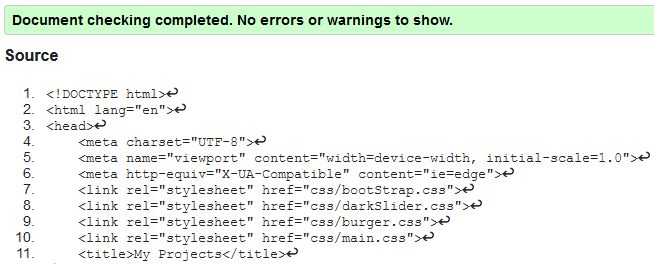 -
index.html
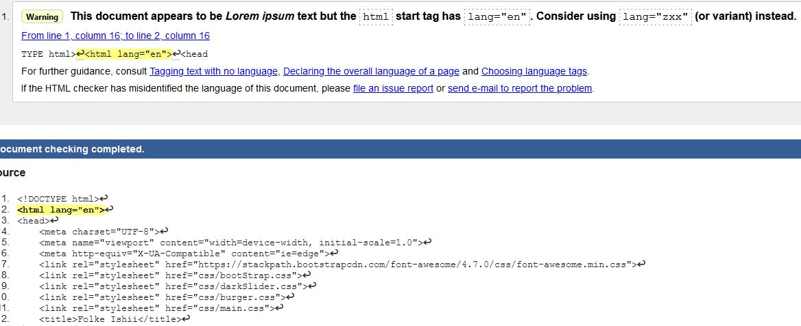 -
blog.html
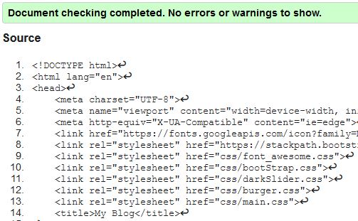 -
about.html
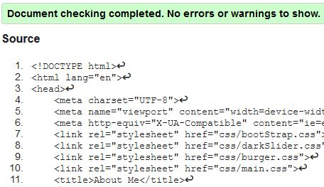 -
planering
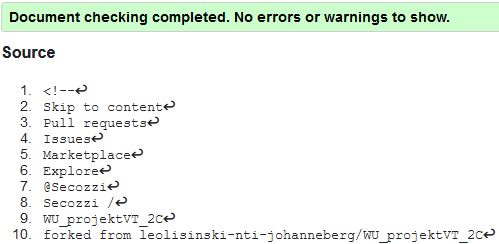 -
creating_this_website.html
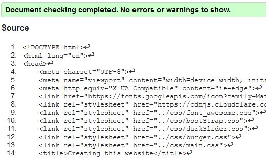 -
creating_caspy.html
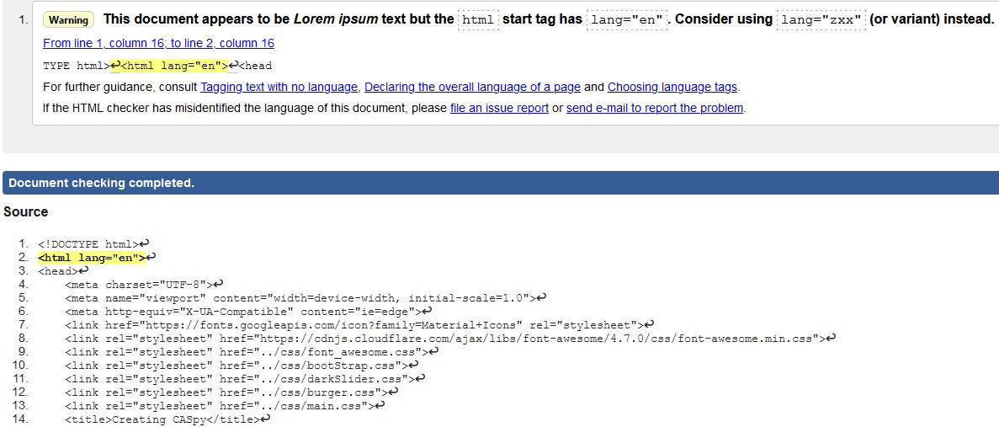
Den sade att dokumenten inte skulle vara på engelska utan latin eller något. Jag använder dock inte latin, utan jag skulle skriva hemsidan på engelska så jag tänker ignorera denna varning. -
tag/projects.html
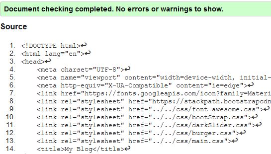 -
tag/programming.html
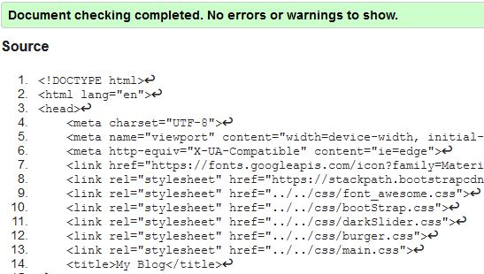 -
main.css
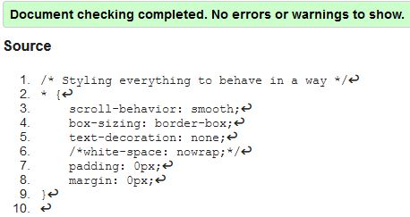 -
darkSlider.css
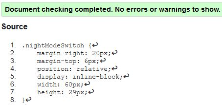 -
burger.css
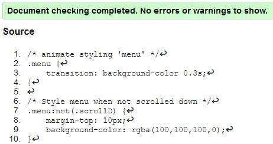 -
font_awesome.css och bootStrap.css är inte skrivet av mig så det finns inga automatiska tester att göra
Tankar kring testerna
- *: När man klickar på länken som för dig till samma dokument, ska href i a-taggen vara '#'
- **: Enheten med minsta storlek kommer vara iPhone 4, med 320px bredd och 480px jöjd enligt webläsaren.
- Allmänt: Responsivitetet fungerar ner tills 315px bredd, men eftersom den minsta enheten som jag tänker supporta är iPhone 4, med 320px bredd så funkar detta. Det kommer nog vara så här på andra hemsidor också
- projects.html: Responsivitetet fungerar ner tills 315px bredd, men eftersom den minsta enheten som jag tänker supporta är iPhone 4, med 320px bredd så funkar detta. Det kommer nog vara så här på andra hemsidor också